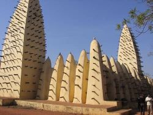

Mosquée de Dioulassoba

Située dans le quartier de Dioulasso Ba,cette belle mosquée d'inspiration soudanaise fut érigée rn 1880.C'est la première de Bobo et l'un des plus anciens édifices du Burkina-Faso. La mosquée est composée de briques rondes faites d'un mélange de terre,d'argile et de banco. Un vaste batiment dont la construction a duré 10 ans.L'édifice qui repose sur des murs en contreforts,est rhymé par une colannade surmontée en sorte de pinacles qui dépassent la toiture plate.Les minarets en forme de cones sont criblés d'armatures en bois qui,tout en étant décoratif,assurent la solidité de l'ouvrage.L'intérieur de la mosquée est soutenue par 42 piliers et le minaret secondaire est composé de 4 étages.C'est une très belle mosquée qui doit absolument ètre visitée.